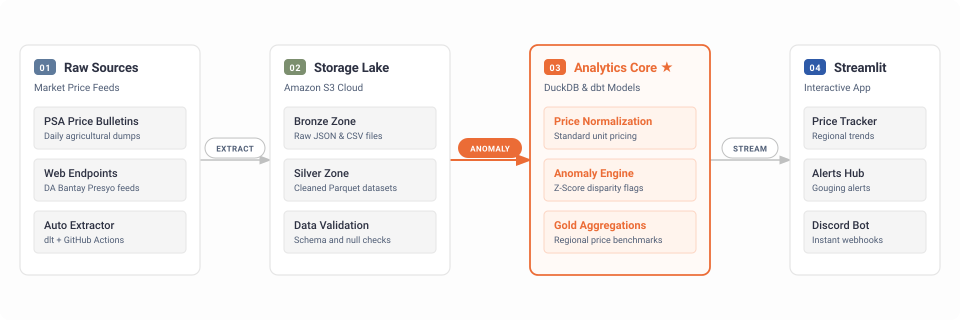

Agri-Price Intelligence Platform
Python · DuckDB · AWS S3 · Streamlit · GitHub Actions · dlt
Problem
Lack of real-time visibility and transparency into nationwide agricultural market price disparities.
Solution
Engineered an automated Lakehouse on S3 with scheduled ingests and statistical anomaly detection.
Result
Surfaced market price anomalies and price gouging patterns via Z-Score clustering in an interactive app.